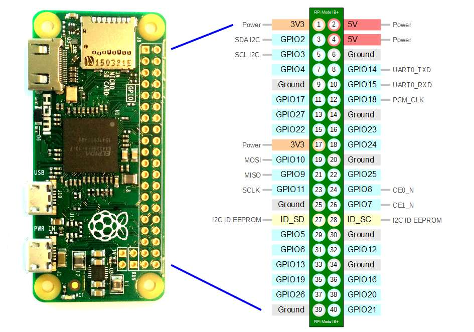
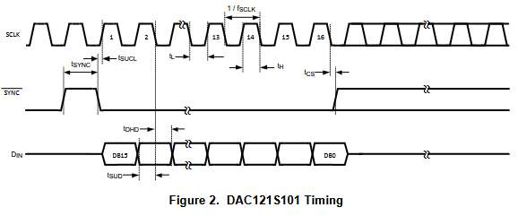
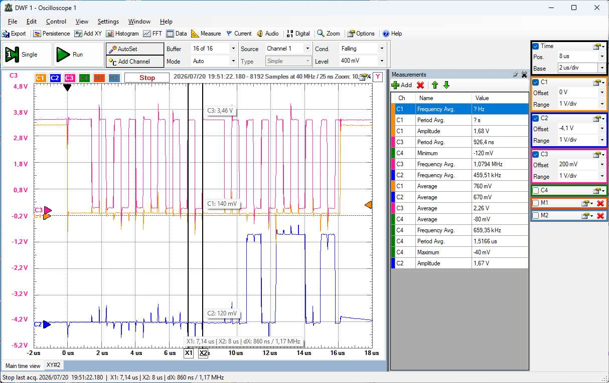
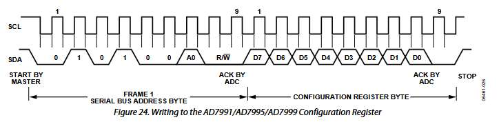
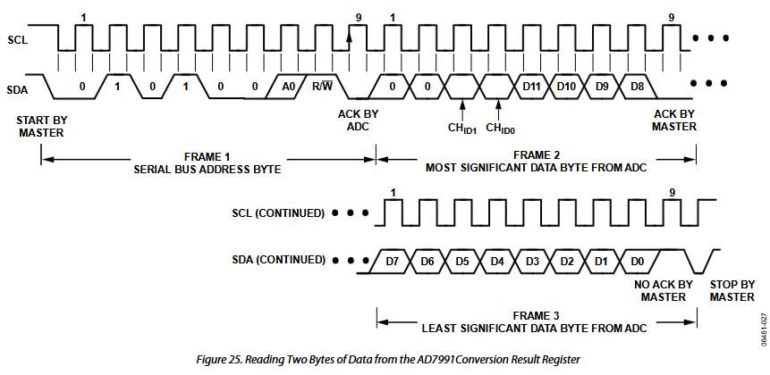

NodeEEBench with Raspberry Pi NodeEEBench
Jörg Vollrath, University of Applied Science Kempten, Germany, Joerg.vollrath@hs-kempten.de
July, 2026
Overview
Hardware
Software
Operation
Summary
To Do List
|
|
Hardware Installation Raspberry Pi Zero W 2 with PMOD DA2, AD2 and R2R DAC
Starting point is a Raspberry Pi Zero W 2 and the
USB Gadget mode in Raspberry Pi OS.
This allows connecting the Pi with an USB cable and appearing as a
LAN interface.
The USB port close to the HDMI is used in gadget mode.
A PMOD DA2, PMOD AD2 and R2R DAC using digital IOs are connected.

Connectivity List:
Pin 1, 3V3, PMOD DA2 Pin6, PMOD AD2 Pin4
Pin 3, SDA I2C, PMOD AD2 Pin 2
Pin 5, SCL I2C, PMOD AD2 Pin 1
Pin 7, GPIO4, IO7
Pin 11, GPIO17, IO0
Pin 12, GPIO18, IO1
Pin 13, GPIO27, IO2
Pin 15, GPIO22, IO3
Pin 16, GPIO23, IO4
Pin 18, GPIO24, IO5
Pin 19, GPIO10, MOSI, DA2 2
Pin 22, GPIO25, IO6
Pin 23, GPIO11, SCLK, DA2 4
Pin 24, GPIO8, CE0_n, DA2 1
GND, DA2 Pin 1, AD2 Pin 3, R2R R0
Software Installation Raspberry Pi Zero W 2
PC Tools:
- Install:
Raspberry Pi Imager
- Install Python: To write manifest
Generate with python a capabilities enhanced manifest
Write manifest with:
C:\Windows\py.exe create_local_json.py --online --capabilities usb_otg i2c spi --device-capabilities usb_otg i2c spi
Double-click the generated os_list_local.rpi-imager-manifest file
- Configure RaspberryPi Zero W 2 MicroSDcard with Image Writer
hostname, user id and pwd (fallback IP is 10.12.194.1)
- Install NDIS network driver:
rpi-usb-gadget-driver-setup.exe
- Enable Network sharing in Ethernet Properties
- putty: Remote Terminal
- WinSCP: File Transfer (FileZilla)
Raspberry Pi Zero W 2
- putty connect to 'hostname' using username and password
cmd: 'ifconfig' gives the current ip address
- Install node
sudo apt install -y nodejs
sudo apt install -y npm
check versions with 'node -v' and 'npm -v'
sudo apt update
- Create directory 'Server' and install node modules
mkdir Server
cd ~/server "/home/user/Server"
npm install rpio
npm install express
npm install socket.io
npm install serialport
- Copy NodeEEBench directory from github of from local directory
and put files in subdirectory Server
Start WinSCP and transfer files
- Start server in directory <user>/Server: node ServerEEBenchPi.js
Open web Browser with: 'hostname':3000
Start server in directory <user>/Server: node ServerEEBenchPi.js
Open web Browser with: 'hostname':3000
Observe statzs communication and error
PMOD DA2
PMOD DA2 SPI interface 16 Bit falling clock edge gets data.
rpio.spiSetDataMode(2);


C1: Pin1 ~SYNC, C2: Pin2 DINA, C3: Pin4 SCLK
A 1 MHz clock can be seen. There are 8 bit data packets.
PMOD AD2 I2C interface
The PMOD AD2 utilizes the
Analog Devices AD7991 4 channel, 12 bit,
1us conversion time (14 MHz bandwidth) and 1.7/3.4 MHz I2C interface device.
Write 8-bit Configuration register: F:1111 0000

var txbuf = new Buffer([0xF0]); // 0xF0 cycle 0,1,2,3; 0x10 Read V0
rpio.i2cBegin();
rpio.i2cSetClockDivider(148); // 250 MHz / 148 = 1.7 MHz (73 3.4 MHz) even number
rpio.i2cSetSlaveAddress(0x28); // I2C Address of AD7991
rpio.i2cWrite(txbuf);
Read 4 conversion values:

rpio.i2cSetSlaveAddress(0x28);
var rxbuf = new Buffer(2);
for (var ix=0; ix<4;ix++) {
rpio.i2cRead(rxbuf, 2);
adcVal = 256 * (rxbuf[0] & 0x0F) + rxbuf[1];
var inX = (rxbuf[1] & 0x30)>>4;
oscData[countX * 5 + inx] = adcVal*8;
}
Autostart at power up
Link [
Boot up start]
- sudo nano /etc/systemd/system/ee-bench-server.service
- File content:
[Unit]
Description=EEBenchPi Node.js Server
After=network.target
[Service]
ExecStart=/usr/bin/node /home/pi/Server/ServerEEBenchPi.js
WorkingDirectory=/home/pi/Server
StandardOutput=inherit
StandardError=inherit
Restart=always
User=root
Group=root
{Install]
WantedBy=multi-user.target
- Save and close
- sudo systemctl daemon-reload
- sudo systemctl enable ee-bench-server.service
- Show log data of 'StandardOutput=inherit"
journaltcl -u ee-bench-server.service -n 50 -f
Using a desktop an autostart of the log file can be created
[
Desktop-Einträge]:
mkdir -p ~/.config/autostart
nano ~/.config/autostart/node-server-log.desktop
[Desktop Entry]
Type=Application
Name=Node.js Server Log
Exec=lxterminal -e "journalctl -u ee-bench-server.service -f"
Terminal=false
hidden=true
Save file
To Do
- Hot-Spot
- Calibrate and adjust sampling
- Observe behaviour in other network
- Edit ServerEEBenchPI.js
- Measure installation time (2 h?)
- MCP4728 4 channel DA I2C for power tab